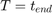
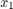
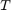
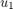
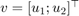

Ginzburg-Landau Model
A demo for the Ginzburg-Landau equation in 2D, inspired by Hannes Uecker and co-workes.
function run_ginzburg_landau_2D
Call class constructor, setup fem and grid. Note that GinzburgLandau class is independent from domian's dimension.
ginzburglandau = GinzburgLandau();
ginzburglandau.grid = Rectangle(-2*pi,2*pi,-2*pi,2*pi,.25);
ginzburglandau.fem = Lagrange12D();
choose 
T = 30;
Define anonymous functions for initial data
u10 = @(x1,x2) cos(x2);
u20 = @(x1,x2) sin(x1);
variables  and $x_2%
x1 = ginzburglandau.grid.x;
x2 = ginzburglandau.grid.y;
Setup initial data, time interval and parameter r.
ginzburglandau.y = [u10(x1,x2)';u20(x1,x2)'];
Number of checkpoints dependent from 
ginzburglandau.time = linspace(0,T,ceil(20*T)+1);
This is a good guess for interesting solutions
ginzburglandau.r = 1.779077550000000;
Setup Nemann boundary condiotions for all equations on all boundary segments.
ginzburglandau.setBoundaryConditions('Neumann','0'); ginzburglandau.initialize;
Ssolve the problem
ginzburglandau.solve;
For use in postprocessing, override solution vector by component u1.
ginzburglandau.y = ginzburglandau.u1;
Plot animation of .
figure(1);
clf
ginzburglandau.animation('EdgeColor','none',...
'Commands',...
'colormap jet',...
'view(2)')
and handmade animation of vector-field .
figure(2);
for k=1:ginzburglandau.nTimeSteps
clf
ginzburglandau.grid.quiver(...
ginzburglandau.u1(:,k)',...
ginzburglandau.u2(:,k)');
drawnow;
end
end